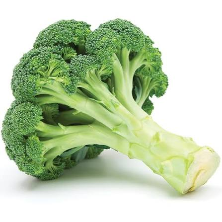
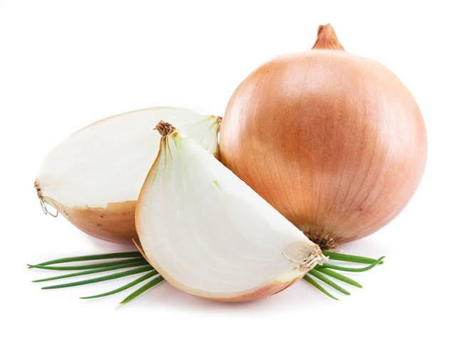
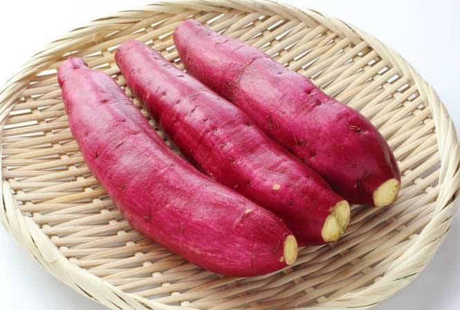
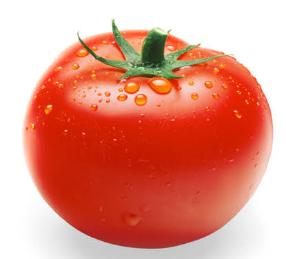
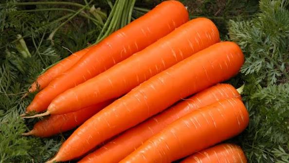

Nhiều người quan niệm rằng ăn những loại thực phẩm lành mạnh rất tốn kém và chúng ta phải chi nhiều tiền hơn cho một thực đơn “healthy”. Tuy nhiên, điều này không hoàn toàn đúng. Chúng ta không cần thiết phải bỏ ra quá nhiều tiền để theo đuổi một chế độ ăn lành mạnh. Hãy tham khảo các loại thực phẩm rẻ và tốt cho sức khỏe ngay sau đây.

Bông cải xanh là một loại rau rẻ, phổ biến và có thể cung cấp hầu hết mọi chất dinh dưỡng mà bạn cần.
Nó đặc biệt giàu vitamin C, hoạt động như một chất chống oxy hóa và có thể tăng cường hệ thống miễn dịch của bạn. Chỉ một cốc bông cải xanh đã cung cấp 135% nhu cầu hàng ngày của mỗi người. Ngoài ra, bông cải xanh rất giàu vitamin K và folate, cả hai đều đóng vai trò trong quá trình đông máu và ngăn ngừa một số dị tật bẩm sinh ống thần kinh. Các nghiên cứu cho thấy rằng, các chất dinh dưỡng và chất chống oxy hóa trong bông cải xanh có thể giúp ngăn ngừa các bệnh mạn tính như ung thư và bệnh tim.

Hành tây là một loại rau phổ biến với nhiều lợi ích cho sức khỏe và chúng có giá khá rẻ. Chúng nổi tiếng vì giàu chất chống oxy hóa nhất định có thể bảo vệ chống lại bệnh tim, tiểu đường và một số loại ung thư. Ngoài ra, hành tây cung cấp một lượng nhỏ một số chất dinh dưỡng, bao gồm vitamin C, mangan, vitamin B6 và kali. Hương vị của hành tây khiến chúng trở thành một bổ sung tuyệt vời cho bất kỳ món ăn nào.

Khoai lang cực kỳ tốt cho sức khỏe và là một trong những loại rau rẻ nhất bạn có thể mua. Chúng cung cấp một lượng vitamin và khoáng chất ấn tượng có nhiều lợi ích cho sức khỏe. Chúng đặc biệt chứa nhiều beta-carotene, được chuyển hóa thành vitamin A trong cơ thể. Chỉ một củ khoai lang cung cấp 369% nhu cầu vitamin A hàng ngày của bạn, đóng vai trò quan trọng đối với sức khỏe của mắt. Khoai lang cũng chứa một lượng vitamin B, vitamin C, kali và chất xơ. Các nghiên cứu cho thấy chúng có thể có tác dụng chống viêm, giúp giảm nguy cơ mắc các bệnh mãn tính như ung thư và tiểu đường.

Cà chua là loại thực đóng hộp được tiêu thụ thường xuyên nhất trong chế độ ăn uống của người Mỹ.
Điều thực sự làm cho cà chua được chú ý tới là hàm lượng vitamin C của chúng. Cà chua cũng cung cấp một lượng vitamin B, vitamin A, E và K cùng nhiều khoáng chất vi lượng. Các nghiên cứu đã chỉ ra rằng, ăn cà chua có thể giúp giảm mức cholesterol LDL “có hại” và mức huyết áp, hai yếu tố nguy cơ chính gây bệnh tim. Hơn nữa, chúng có thể bảo vệ chống lại một số loại ung thư.
Nhiều lợi ích sức khỏe của chúng là do hàm lượng lycopen cao mang lại. Lycopene là một chất chống oxy hóa có thể làm giảm viêm, bảo vệ tế bào khỏi bị tổn thương và giảm nguy cơ mắc bệnh.

Nếu ngân sách của bạn eo hẹp, cà rốt là một loại rau rẻ và giàu chất dinh dưỡng để đưa vào chế độ ăn uống. Cà rốt là một trong những loại rau củ chứa nhiều beta-carotene, lý giải cho hàm lượng vitamin A ấn tượng của chúng. Chỉ một cốc cà rốt đã cung cấp 428% nhu cầu hàng ngày của bạn về vitamin A, giúp thúc đẩy thị lực tốt và tăng cường sức khỏe hệ miễn dịch.
Hơn nữa, cà rốt chứa một lượng đáng kể chất xơ, vitamin C, vitamin K, kali và mangan. Do hàm lượng chất chống oxy hóa cao, ăn cà rốt thường xuyên có thể giúp giảm nguy cơ mắc một số loại ung thư, bao gồm cả ung thư tuyến tiền liệt và ung thư dạ dày.
Cà rốt cũng rất dễ chế biến. Chúng ta có thể nấu chín hoặc ăn sống đều được. Ngoài ra, chúng là một bổ sung tuyệt vời cho món salad và các món ăn nấu chín.